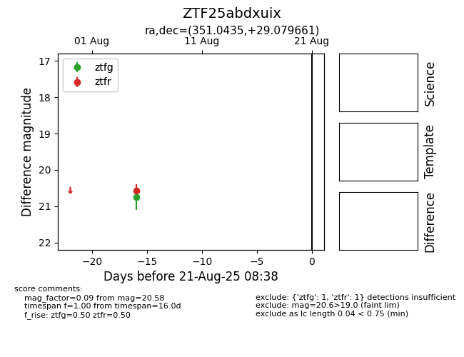

Target ZTF25abdxuix at 2025-08-21 08:38, see:
FINK: fink-portal.org/ZTF25abdxuix
Lasair: lasair-ztf.lsst.ac.uk/objects/ZTF25abdxuix
ALeRCE: alerce.online/object/ZTF25abdxuix
alt names
ZTF25abdxuix (ztf,alerce)
coordinates:
equatorial (ra, dec) = (351.0435,+29.07966)
galactic (l, b) = (100.8987,-30.03154)
photometry
last ztfg=20.74, ztfr=20.58
1 ztfg, 1 ztfr detections
